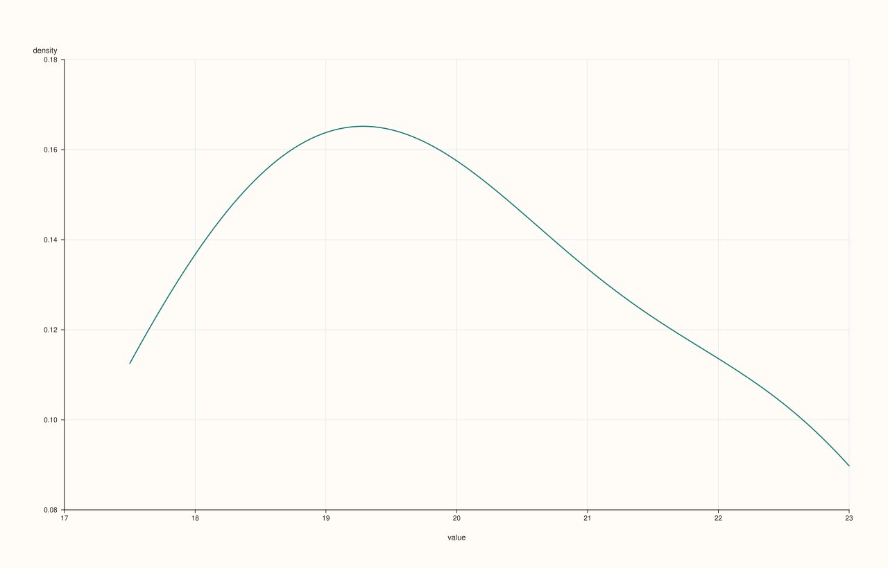
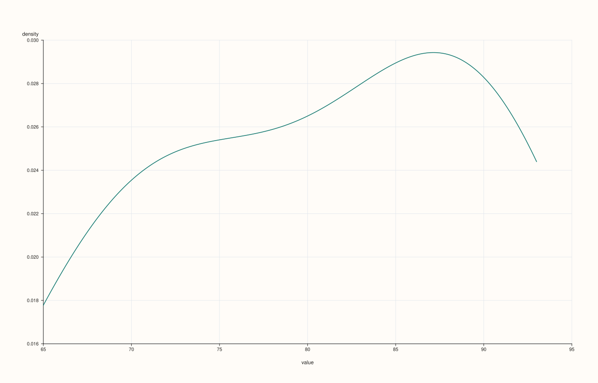

CatalogPlotAccessor::density¶
Back to CatalogPlotAccessor API Reference
Signatures¶
CatalogPlotAccessor::density(std::string_view key, std::int64_t points = 128) const -> pluss::pl::Studio
CatalogPlotAccessor::density(pluss::msharp::RangeView::Of<std::string_view> keys = {},
std::int64_t points = 128) const -> pluss::pl::Studio
CatalogPlotAccessor::density(std::initializer_list<std::string_view> keys,
std::int64_t points = 128) const -> pluss::pl::Studio
CatalogPlotAccessor::density(std::string_view key, const DensityPlotOptions& options) const -> pluss::pl::Studio
CatalogPlotAccessor::density(pluss::msharp::RangeView::Of<std::string_view> keys,
const DensityPlotOptions& options) const -> pluss::pl::Studio
CatalogPlotAccessor::density(std::initializer_list<std::string_view> keys,
const DensityPlotOptions& options) const -> pluss::pl::Studio
What It Does¶
The same per-key distribution idea as hist(), drawn as a smoothed kernel
density curve (flash::kdeplot) instead of binned counts — one curve per requested key,
overlaid on a shared "value"/"density" axis pair.
Parameters¶
key / keys (std::string_view / RangeView<std::string_view> /
std::initializer_list<std::string_view>, keys defaults to {})
Same resolution as hist(): an empty keys selects every
plottable key; an explicitly named unknown key throws
"Catalog::plot().density: unknown key '<name>'", the same way hist()’s Example 5
does.
points (std::int64_t, default 128)
The number of points the density curve is evaluated at, forwarded into a
DensityPlotOptions{.points = points}. Internally clamped to a minimum of 16
regardless of what’s passed.
options (DensityPlotOptions)
cpp struct DensityPlotOptions { std::int64_t points{128}; double alpha{1.0}; double line_width{1.5}; };
Returns¶
pluss::pl::Studio
A figure with one pane containing one density curve per requested key.
Examples¶
Example 1. A single key, default point count (128).
using namespace pluss::kindle::literals;
auto weather = pluss::kindle::Catalog({
"temp_c"_k = pluss::kindle::Stream(pluss::make_series({18.0, 19.5, 21.0, 20.0, 22.5, 17.5, 23.0, 19.0})),
"humidity"_k = pluss::kindle::Stream(pluss::make_series({55.0, 60.0, 65.0, 62.0, 58.0, 53.0, 66.0, 59.0})),
});
auto chart = weather.plot().density("temp_c");
chart.show();

Example 2. An explicit, coarser point count.
using namespace pluss::kindle::literals;
auto weather = pluss::kindle::Catalog({
"temp_c"_k = pluss::kindle::Stream(pluss::make_series({18.0, 19.5, 21.0, 20.0, 22.5, 17.5, 23.0, 19.0})),
});
auto chart = weather.plot().density("temp_c", 32);
chart.show();

Example 3. Multiple keys via a brace-init list, both curves on the same pane.
using namespace pluss::kindle::literals;
auto weather = pluss::kindle::Catalog({
"temp_c"_k = pluss::kindle::Stream(pluss::make_series({18.0, 19.5, 21.0, 20.0, 22.5, 17.5, 23.0, 19.0})),
"humidity"_k = pluss::kindle::Stream(pluss::make_series({55.0, 60.0, 65.0, 62.0, 58.0, 53.0, 66.0, 59.0})),
});
auto chart = weather.plot().density({"temp_c", "humidity"});
chart.show();

Example 4. An explicit DensityPlotOptions, tuning point count and opacity.
using namespace pluss::kindle::literals;
auto weather = pluss::kindle::Catalog({
"temp_c"_k = pluss::kindle::Stream(pluss::make_series({18.0, 19.5, 21.0, 20.0, 22.5, 17.5, 23.0, 19.0})),
});
pluss::table::DensityPlotOptions density_options;
density_options.points = 64;
density_options.alpha = 0.5;
auto chart = weather.plot().density("temp_c", density_options);
chart.show();

Notes¶
An empty
keysselects every plottable key; an explicitly named unknown key throws — seehist()’s identical rule and edge-case example.pointsis clamped to a minimum of16internally, regardless of the value passed.Every requested key’s density curve is drawn on the same pane, sharing one
"value"/"density"axis pair.Returns a
pluss::pl::Studio— seeline()’s important callout for how to view or save the result.
See Also¶
CatalogPlotAccessor::hist: the same per-key distribution idea, as binned counts instead of a smoothed curve.CatalogPlotAccessor::line: the canonical explanation of this accessor’s shared mechanics.